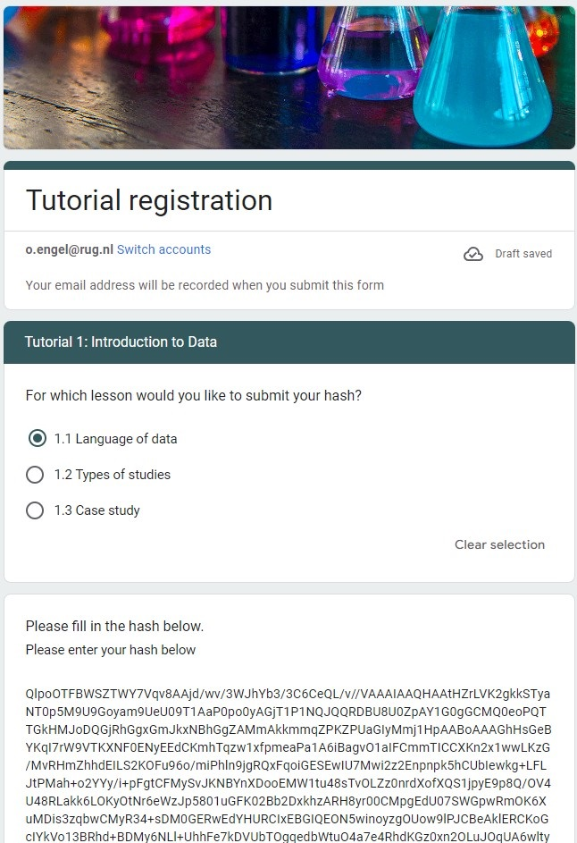

Case Study: Italian restaurants in NYC
Explore the relationship between price and the quality of food, service, and decor for Italian restaurants in NYC.
No matter where you are, or where you’ve been, if you’re taking this tutorial, my guess is that you’ve been to a restaurant before. And if you’re in Europe or North America, there’s an excellent chance that you’ve been to an Italian restaurant. The Italian restaurants in New York City are legendary, and it’s time to put your newly-developed regression modeling skills to work to understand how they operate.
What are the factors that contribute to a price of a meal at Italian restaurants in New York City? We will address this question with a series of multiple regression models.

Zagat guide
The Zagat guide is an influential review of restaurants. They are made famous by their use of selective quotes from actual diners to build a pithy description of each restaurant. But we won’t be working with the text. Rather, we’ll be working with the numeric reviews you see posted here. Each restaurant is rated on a scale of 0 to 30 for the quality of its food, decor, and service. The average price of a meal—which includes one drink and a tip—will be our response variable. How do these factors influence the average price of a meal?

Exploring the data
glimpse(nyc)## Rows: 168
## Columns: 7
## $ Case <dbl> 1, 2, 3, 4, 5, 6, 7, 8, 9, 10, 11, 12, 13, 14, 15, 16, 17, …
## $ Restaurant <chr> "Daniella Ristorante", "Tello's Ristorante", "Biricchino", …
## $ Price <dbl> 43, 32, 34, 41, 54, 52, 34, 34, 39, 44, 45, 47, 52, 35, 47,…
## $ Food <dbl> 22, 20, 21, 20, 24, 22, 22, 20, 22, 21, 19, 21, 21, 19, 20,…
## $ Decor <dbl> 18, 19, 13, 20, 19, 22, 16, 18, 19, 17, 17, 19, 19, 17, 18,…
## $ Service <dbl> 20, 19, 18, 17, 21, 21, 21, 21, 22, 19, 20, 21, 20, 19, 21,…
## $ East <dbl> 0, 0, 0, 0, 0, 0, 0, 1, 1, 1, 1, 1, 1, 1, 1, 1, 1, 1, 1, 1,…Our data come in the form of Zagat reviews from 168 Italian
restaurants in New York City from 2001. The glimpse()
function can help you get a sense of how the variables are encoded and
what values they typically take on. The East variable
records whether the restaurant is located east or west of Fifth Avenue,
which historically divides the island of Manhattan.
EDA
nyc |>
select(-Restaurant) |>
pairs()Before we can sensibly build models, we should spend some time
exploring the data. How are the variables distributed? How are they
related to one another? What patterns are present? The
pairs() function can help us explore these relationships
visually. It shows a grid of scatterplots for each pair of variables in
the nyc data frame. It’s easy to see that, for example,
Price and Decor are strongly correlated, while
Case and Food are uncorrelated.
Exploratory data analysis
Multiple regression can be an effective technique for understanding how a response variable changes as a result of changes to more than one explanatory variable. But it is not magic – understanding the relationships among the explanatory variables is also necessary, and will help us build a better model. This process is often called exploratory data analysis (EDA) and is covered in the previous tutorial on Summarizing and Visualizing Data.
One quick technique for jump-starting EDA is to examine all of the
pairwise scatterplots in your data. This can be achieved using the
pairs() function. Look for variables in the
nyc data set that are strongly correlated, as those
relationships will help us check for multicollinearity
later on.
Create a pairs-plot for nyc, for all variables except
for Restaurant.
The `pairs()` function is helpful for looking for pairs of variables that have high correlation.nyc |>
select(-Restaurant) |>
pairs()SLR models
Based on your knowledge of the restaurant industry, do you think that
the quality of the food in a restaurant is an important determinant of
the price of a meal at that restaurant? It would be hard to imagine that
it wasn’t. We’ll start our modeling process by plotting and fitting a
model for Price as a function of Food.
On your own, interpret these coefficients and examine the fit of the
model. What does the coefficient of Food mean in plain
English? “Each additional rating point of food quality is associated
with a…”
- Use
ggplotto make a scatter plot forPriceas a function ofFood. - Use
lm()to fit a simple linear regression model forPriceas a function ofFood.
# Price by Food plot
# Price by Food modelggplot(data = nyc, aes(x = Food, y = Price)) +
geom_point()lm(Price ~ Food, data = nyc)# Price by Food plot
ggplot(data = nyc, aes(x = Food, y = Price)) +
geom_point()
# Price by Food model
lm(Price ~ Food, data = nyc)Incorporating another variable
Fifth Avenue
Fifth Avenue is one the most well-known streets in the world, renowned for its flagship stores for shopping, landmark hotels, and internationally-recognized sites. A walk down 5th Avenue from Central Park to Washington Square Park would take you past the Plaza Hotel, Trump Tower, Saks Fifth Avenue, the New York Public Library, the Empire State Building, and the Flatiron building.
CUNY
It would also take you past the Graduate Center of the City University of New York, where one of the authors studied for their doctoral degree. Good times!
Dividing the City
5th Avenue divides the island of Manhattan vertically. The city’s east side has historically been home to expensive residences and opulent attractions. Maybe everything is more expensive on the East side. Maybe even food is more expensive on the east side. Do Italian restaurants located on the east side of 5th Avenue tend to charge more? How much more?

The price of location
nyc |>
group_by(East) |>
summarize(mean_price = mean(Price))It’s certainly true that the average price of a meal for restaurants located on the east side of Manhattan was higher than it was for restaurants on the west side. The table above shows that they charged about $3.58 more, on average. But does this figure really represent the premium for being on the east side? Could it be the case that the restaurants on the east side also had better food, and that is what was driving the increase in price? You’ll explore this question in the exercises.
Service
Another important consideration in dining out is the quality of the service. Are people willing to pay more for higher quality service, even if the food doesn’t taste any better? How much more? How does the average price of meal vary with respect to the quality of the food and the service? It’s up to you to figure it out.

Parallel lines with location
In real estate, a common mantra is that the three most important factors in determining the price of a property are “location, location, and location.” If location drives up property values and rents, then we might imagine that location would increase a restaurant’s costs, which would result in them having higher prices. In many parts of New York, the east side (east of 5th Avenue) is more developed and perhaps more expensive. [This is increasingly less true, but was more true at the time these data were collected.]
Let’s expand our model into a parallel slopes model by including the
East variable in addition to Food.
- Use
lm()to fit a parallel slopes model forPriceas a function ofFoodandEast. - Interpret the coefficients and the fit of the model.
- Can you explain the meaning of the coefficient on
Eastin simple terms? Did the coefficient onFoodchange from the previous model? If so, why? Did it change by a lot or just a little?
*Hint:* What is the difference between the coefficients that are in both models?lm(Price ~ Food + East, data = nyc)A plane in 3D
One reason that many people go to a restaurant - apart from the food
- is that they don’t have to cook or clean up. Many people appreciate
the experience of being waited upon, and we can all agree that the
quality of the service at restaurants varies widely. Are people willing
to pay more for better restaurant Service? More
interestingly, are they willing to pay more for better service, after
controlling for the quality of the food?
Multiple regression gives us a way to reason about these questions.
Fit the model with Food and Service and
interpret the coefficients and fit. Did the coefficient on
Food change from the previous model? What do the
coefficients on Food and Service tell you
about how these restaurants set prices?
Next, let’s visually assess our model using plotly. The
x and y vectors, as well as the
plane matrix, have been created for you.
- Use
lm()to fit a multiple regression model forPriceas a function ofFoodandService. - Use
plot_lyto draw 3D scatterplot forPriceas a function ofFoodandServiceby mapping thezvariable to the response and thexandyvariables to the explanatory variables. Place the food quality on the x-axis and service rating on the y-axis. - Use
add_surface()to draw a plane through the cloud of points using the objectplane.
# fit model
# draw 3D scatterplot
p <- plot_ly(data = nyc, z = ~___, x = ~___, y = ~___, opacity = 0.6) |>
add_markers()
# draw a plane
p |>
add_surface(x = ~x, y = ~y, z = ~___, showscale = FALSE) Remember `add_surface()`?# fit model
lm(Price ~ Food + Service, data = nyc)
# draw 3D scatterplot
p <- plot_ly(data = nyc, z = ~Price, x = ~Food, y = ~Service, opacity = 0.6) |>
add_markers()
# draw a plane
p |>
add_surface(x = ~x, y = ~y, z = ~plane, showscale = FALSE) Higher dimensions
Decor
The last criteria for the Zagat review is decor. This refers to the visual presentation of the restaurant: the furniture, the wall adornments, and the overall ambiance. Clearly, restaurants vary widely in the quality of their decor. But how does the perceived quality of decor vary with the price of a meal? And how is the effect moderated by the quality of food and service?
Building a full model
In what follows, you will build more complex models for the price of
a meal at an Italian restaurant in New York City using the Zagat
ratings. The possible explanatory variables include Food,
Service, Decor, and East. Other
variables recorded in the data set that should not be considered
explanatory variables are Case (which records an ID number
for each restaurant), and Restaurant (which records the
name of the restaurant).
- Response variable:
Price
- Explanatory variables
FoodServiceDecorEast(categorical)
- Unusable
CaseRestaurant
Consider for a moment what a full model that included all of these explanatory variables would look like.
Collinearity
nyc |>
mutate(Price_cents = Price / 100) |>
summarize(cor_collinear = cor(Price, Price_cents))If one variable is a constant multiple of another variable, then they are said to be collinear. If two collinear variables are explanatory variables in a model, the second one won’t tell you anything, because it is providing redundant information. A solution would be to simply drop one of the variables from the model. Which one you drop doesn’t matter, since they are providing the same information.
Here we demonstrate collinearity between Price measured in dollars and Price measured in cents. The values of the two variables aren’t the same, but they are perfectly correlated. If you already know the price in dollars, you don’t get any additional information from knowing the price in cents.
Real data hardly ever lines up perfectly, so you’ll rarely have perfect collinearity. However, variables that are highly correlated will be approximately collinear. Furthermore, the collinearity does not have to be one-to-one. It might be the case that one variable is collinear with a linear combination of several other variables. This can make it much harder to figure out which variable might be appropriate to drop.
Multicollinearity
- Explanatory variables are highly correlated
- Unstable coefficient estimates
- Doesn’t affect \(R^2\)
- Be sceptical of surprising results
As we add more explanatory variables to our model, it becomes more likely that we will encounter multicollinearity. A full discussion of multicollinearity and how you can work around it is beyond the scope of this tutorial, but you should be familiar with the basic problem.
The main problem with multicollinearity is that it makes the coefficient estimates unstable. This means that small changes to the values in one variable (say, changing the food rating of a few restaurants) can result in dramatic changes to the best-fit coefficients. This instability makes our results less robust. However, multicollinearity does not compromise the explanatory power of the model as a whole. The \(R^2\) values are still valid.
While there are a number of approaches to diagnosing and correcting for multicollinearity, at this stage you should exercise great caution when interpreting coefficients in a model where you have highly correlated explanatory variables. If you see results that seem strange, counterintuitive, or surprising, it might be that multicollinearity is to blame.
Parallel planes with location
We have explored models that included the quality of both food and service, as well as location, but we haven’t put these variables all into the same model. Let’s now build a parallel planes model that incorporates all three variables.
Examine the coefficients closely. Do they make sense based on what you understand about these data so far? How did the coefficients change from the previous models that you fit?
- Use
lm()to fit a parallel planes model forPriceas a function ofFood,Service, andEastfrom the datasetnyc.
# Price by Food and Service and Eastlm(Price ~ ___ + ___ + ___, data = nyc)# Price by Food and Service and East
lm(Price ~ Food + Service + East, data = nyc)Interpretation of location coefficient
The fitted coefficients from the parallel planes model are listed below.
##
## Call:
## lm(formula = Price ~ Food + Service + East, data = nyc)
##
## Coefficients:
## (Intercept) Food Service East
## -20.8155 1.4863 1.6647 0.9649Reason about the magnitude of the East coefficient.
Hint: Does being on the East side increase or decrease the price of a meal?
Impact of location
The impact of location brings us to a modeling question: should we keep this variable in our model? In a later tutorial, you will learn how we can conduct formal hypothesis tests to help us answer that question. In this tutorial, we will focus on the size of the effect. Is the impact of location big or small?
One way to think about this would be in terms of the practical significance. Is the value of the coefficient large enough to make a difference to your average person? The units are in dollars so in this case this question is not hard to grasp.
Another way is to examine the impact of location in the context of
the variability of the other variables. We can do this by building our
parallel planes in 3D and seeing how far apart they are. Are the planes
close together or far apart? Does the East variable clearly
separate the data into two distinct groups? Or are the points all mixed
up together?
- Use
plot_lyto draw 3D scatterplot forPriceas a function ofFood,Service, andEastby mapping thezvariable to the response and thexandyvariables to the numeric explanatory variables. Use color to indicate the value ofEast. PlaceFoodon the x-axis andServiceon the y-axis. - Use
add_surface()(twice) to draw two planes through the cloud of points, one for restaurants on the West side and another for restaurants on the East side. Use the objectsplane0andplane1.
# draw 3D scatterplot
p <- plot_ly(data = nyc, z = ~___, x = ~___, y = ~___, opacity = 0.6) |>
add_markers(color = ~factor(East))
# draw two planes
p |>
add_surface(x = ~x, y = ~y, z = ~___, showscale = FALSE) |>
add_surface(x = ~x, y = ~y, z = ~___, showscale = FALSE) In `add_surface()` `z` should be `~plane0` in one layer and `~plane1` in the other.# draw 3D scatterplot
p <- plot_ly(data = nyc, z = ~Price, x = ~Food, y = ~Service, opacity = 0.6) |>
add_markers(color = ~factor(East))
# draw two planes
p |>
add_surface(x = ~x, y = ~y, z = ~plane0, showscale = FALSE) |>
add_surface(x = ~x, y = ~y, z = ~plane1, showscale = FALSE)Full model
One variable we haven’t considered is Decor. Do people,
on average, pay more for a meal in a restaurant with nicer decor? If so,
does it still matter after controlling for the quality of food, service,
and location?
By adding a third numeric explanatory variable to our model, we lose the ability to visualize the model in even three dimensions. Our model is now a hyperplane – or rather, parallel hyperplanes – and while we won’t go any further with the geometry, know that we can continue to add as many variables to our model as we want. As humans, our spatial visualization ability taps out after three numeric variables (maybe you could argue for four, but certainly no further), but neither the mathematical equation for the regression model, nor the formula specification for the model in R, is bothered by the higher dimensionality.
Use lm() to fit a parallel planes model for
Price as a function of Food,
Service, Decor, and East using
the dataset nyc.
# Price by Food and Service and East and Decorlm(Price ~ ___ + ___ + ___ + ___, data = nyc)lm(Price ~ Food + Service + East + Decor, data = nyc)Notice the dramatic change in the value of the Service
coefficient.
Hint: If the coefficient on Service changes so
much, how likely is it that any interpretation relying on the estimate
is valid?
Hash and submit
Submit your hash in a form
After creating the hash, please copy it, navigate to this form and fill it in and submit. You will need to submit the form once for every lesson you complete in this tutorial.
